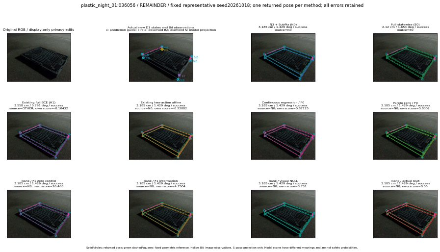

실선은 반환 자세, 초록 점선은 고정 기하 참조입니다. S는 영상 관측이 아닙니다. 점수는 모델별 의미가 다르며 보정된 안전 확률이 아닙니다. 개인정보 처리는 표시 사본에만 적용했습니다.
| 방법·seed | 위치 / 회전 / 공동성공 | 실제 출처 | 선택 후보 | 각 모델 자체 점수 |
|---|---|---|---|---|
| N0 | 3.185 cm / 1.429 deg / success | N0 | N/A | N/A |
| E0 | 2.12 cm / 1.654 deg / success | E0 | N/A | N/A |
| E0_REGENERATED | 2.12 cm / 1.654 deg / success | E0 | E0_REGENERATED | N/A |
| POSEFIX_SUBPIX_PF_ANCHOR | 4.764 cm / 1.451 deg / success | OTHER | N/A | N/A |
| POSEFIX_SUBPIX_YOLO_ANCHOR | 4.653 cm / 1.257 deg / success | OTHER | N/A | N/A |
| D1_H1_MLP_s20261018 | 3.558 cm / 0.791 deg / success | OTHER | G10/ORIGINAL_WD/selected | -0.10431824624538422 |
| D1_H1_MLP_s20261019 | 2.12 cm / 1.654 deg / success | OTHER | G13/ORIGINAL_WD/endpoint/63 | -0.16167065501213074 |
| D1_H1_MLP_s20261020 | 3.558 cm / 0.791 deg / success | OTHER | G10/ORIGINAL_WD/selected | -1.3327597379684448 |
| D1_H1_PAIR_MLP_s20261018 | 3.185 cm / 1.429 deg / success | N0 | N0 | -1.0249075889587402 |
| D1_H1_PAIR_MLP_s20261019 | 3.185 cm / 1.429 deg / success | N0 | N0 | -0.475477933883667 |
| D1_H1_PAIR_MLP_s20261020 | 3.185 cm / 1.429 deg / success | N0 | N0 | -0.7961702346801758 |
| D1_H1_PAIR_ROLE_AFFINE_s20261018 | 3.185 cm / 1.429 deg / success | N0 | N0 | -0.22082270681858063 |
| D1_H1_PAIR_ROLE_AFFINE_s20261019 | 3.185 cm / 1.429 deg / success | N0 | N0 | 0.0023107342422008514 |
| D1_H1_PAIR_ROLE_AFFINE_s20261020 | 3.185 cm / 1.429 deg / success | N0 | N0 | -0.043334465473890305 |
| R_CONT_F0_s20261018 | 3.185 cm / 1.429 deg / success | N0 | N0 | 0.8712460398674011 |
| R_CONT_F0_s20261019 | 3.185 cm / 1.429 deg / success | N0 | N0 | 0.9051452279090881 |
| R_CONT_F0_s20261020 | 3.185 cm / 1.429 deg / success | N0 | N0 | 1.0701754093170166 |
| R_ORDER_F0_s20261018 | 3.185 cm / 1.429 deg / success | N0 | N0 | 5.830193519592285 |
| R_ORDER_F0_s20261019 | 3.185 cm / 1.429 deg / success | N0 | N0 | 2.901198387145996 |
| R_ORDER_F0_s20261020 | 3.185 cm / 1.429 deg / success | N0 | N0 | -12.938313484191895 |
| R_ORDER_F1_ZERO_s20261018 | 3.185 cm / 1.429 deg / success | N0 | N0 | 26.468414306640625 |
| R_ORDER_F1_ZERO_s20261019 | 3.558 cm / 0.791 deg / success | OTHER | G10/ORIGINAL_WD/selected | 23.85011863708496 |
| R_ORDER_F1_ZERO_s20261020 | 3.185 cm / 1.429 deg / success | N0 | N0 | 10.782094955444336 |
| R_ORDER_F1_s20261018 | 3.185 cm / 1.429 deg / success | N0 | N0 | 4.750364303588867 |
| R_ORDER_F1_s20261019 | 3.185 cm / 1.429 deg / success | N0 | N0 | 6.430844783782959 |
| R_ORDER_F1_s20261020 | 3.185 cm / 1.429 deg / success | N0 | N0 | -0.6094334721565247 |
| V_ORDER_NULL_s20261018 | 3.185 cm / 1.429 deg / success | N0 | N0 | 3.730977773666382 |
| V_ORDER_NULL_s20261019 | 3.185 cm / 1.429 deg / success | N0 | N0 | 1.809552788734436 |
| V_ORDER_NULL_s20261020 | 3.185 cm / 1.429 deg / success | N0 | N0 | -1.14104425907135 |
| V_ORDER_RGB_s20261018 | 3.185 cm / 1.429 deg / success | N0 | N0 | 8.54995346069336 |
| V_ORDER_RGB_s20261019 | 3.185 cm / 1.429 deg / success | N0 | N0 | 1.2262195348739624 |
| V_ORDER_RGB_s20261020 | 3.185 cm / 1.429 deg / success | N0 | N0 | -7.44051456451416 |